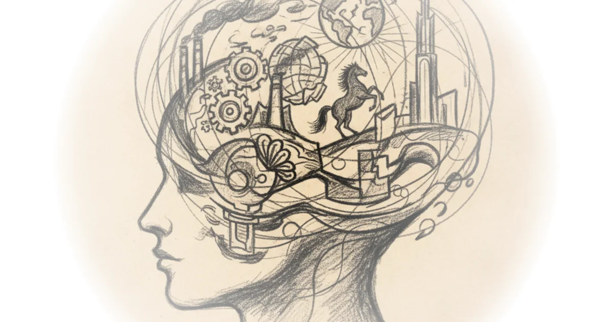

Why German History is Different
Commentary by Brian Edwards
Sources
Why German History is Different
foreign thinking about how Germany changed the course of history no not that history before that Germany gave us some of our most influential thinkers people like can't Hagel schoppenhauer Heidegger Nietzsche Marx why was that in fact for good door for bad many of the ideas and problems of modern life are focus on the individual a concern with industrialism an emphasis on Nations and national identity even the idea of a rebellious Spirit arose out of the small area in the middle of a yet to be unified Germany in this small area a Crucible of modernity and a reaction to it emerged I've come here to explore all of this and it starts with the enlightenment because during those tumultuous years Germany became a great critic of the dominant cultures that surrounded it British and French culture in particular I want to look at how that critical culture emerged look at some of the romanticists and irrationalist philosophies It produced asked what it gave us ask how it might help us why it's still an important model of human behavior for us that we can learn from today whereas England and France have a claim to having a single coherent National narrative and National story of A Sort Germany's is much more fragmented as it was a loose collection of Germanic principalities and States until it was unified only in 1871. Goethe Germany's answer to Shakespeare wrote Germany where is it I do not know where to find such a country the bavarians fought with the French for example during the Napoleonic Wars and before that the Germanic people had been traumatized by the widespread Devastation of the 30 Years War which largely took place on German soil included every major European power and complex alliances of different states and monarchies leagues Empires and principalities and around 20 percent of Europe's population died during that war in some areas that was as high as 60 percent okay so Germany was fractured but it's real modern history begins with a reaction a reaction against the French with their enlightened dominant Enlightenment rationalist culture and against the British with its empiricists and scientists and its great Empire what did the Germans have it had an inferiority complex and it was invaded by Napoleon an occupied in totality by 1812. the Germans were forced to fight for the French in ...